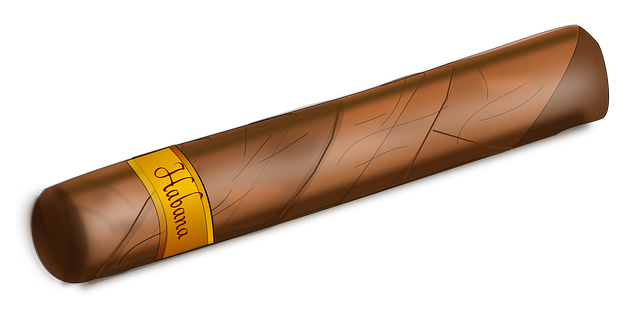
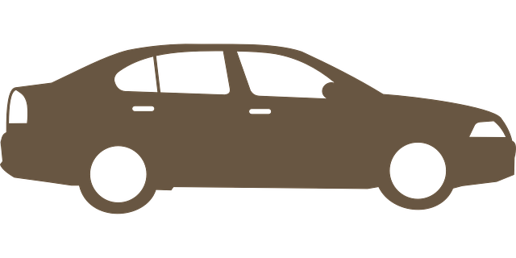

Don't Blink! The Legendary Driving Crooner is coming to your city! Do not miss this once-in-a-lifetime opportunity to see this
authentic talent, but don't you dare try to make it look fake. It's simply too good!
Sign up to get notifications when The Driving Crooner is near you!
The Driving Crooner Starter Pack
Fedora/Trilby Decal

Cigar Decal

Sedan
100% Commitment
"I saw The Driving Crooner on the 110 just outside LA! It was the coolest thing that I have ever seen. I almost had to step in though when I
saw some stupid frat guy speed up to try to make it look fake. I don't know why they hate it so much! It doesn't make any sense. The Driving Crooner was born to
do this, he was born to be GREAT. I am so glad that he found a way to make money off of this idea, it is simply too good. 5/5 Cigars!"
- Eddie Munster
Sign Up for notifications about The Driving Crooner sightings, franchise opportunities, and upcoming events. It's almost too easy!